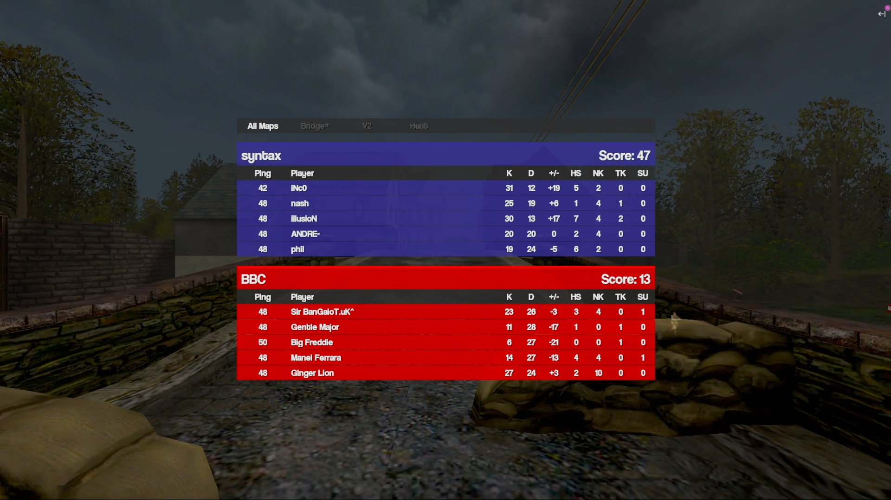

MOHAA Heads Up Display (HUD)#
Screenshots#
Screenshot of gameplay streamed on Twitch using the HUD.
{kind=link}
 Screenshot of the HUD detailed scoreboard.
{kind=link}
Screenshot of the Instant Replay feature.
{kind=link}
Quick Start#
- Place the HUD pk3 file in your
mainfolder. - Launch
MOHAA.exe. - Inject the HUD DLL file (using whichever injector you wish) into the game.
- Join your server.
Files#
FAQ#
Q: Which wallhack do you use?
A: The streamer can use any wallhack, but I recommend the "Ghost Chams"
wallhack, as it's subtle.
Q: Does this auto-update scores during the game?
A: Yes, it runs in the spectator's
game, and everything updates automatically without intervention.
Q: Can I change the graphics?
A: Yes, you can modify any of the HUD graphics by downloading the HUD pk3
and updating the graphics there. Note that changing their size may not change
their size in game as their size is hard-coded.
Q: How does it know which player is on which team?
A: You use the custom HUD cvars hud.team1.tag and hud.team2.tag to
tell the HUD which player tags to look for for each team.
Q: Can I use the HUD with Volute?
A: No; the participating players use Volute as normal, and the streamer
does not.
Hotkeys#
Left ALT key is the master key. Combine this with the following:
- [0-9]: Rotate the player we are speccing until we reach the target player.
- A: Hide/show notification messages.
- C: Hide/show chat messages.
- F: Toggle model shrinking when speccing player (useful for specfix severs). Only toggles when you are speccing the player, no other time (e.g., free spec).
- H: Toggle round "HOLDING". When HOLDING, and a new round starts, the stats from the previous round do not get saved.
- K: Hide/show kill feed.
- M: Toggle map score view (show scores from current map).
- N: Hide/show player names drawn on players.
- R: Instant replay for the last 7 seconds, within the game. Note that in free spectate mode, you can also look freely in the replay.
- S: Swap logos (i.e., teams changed side). Note this should not be
used if
hud.team1.tagandhud.team2.tagare used, as the swap is automatically detected. - T: Hide/show team colours.
- INSERT/DELETE and PAGEUP/PAGEDOWN: Increase/decrease team Obj scores
manually. Note that in Obj, the score auto-increases when
hud.team1.tagandhud.team2.tagare used, but any errors can be corrected manually with these hotkeys.
Custom Scoreboard#
You can show the custom scoreboard by holding TAB as normal. KDR stands for Kill/Death Ratio. When the custom scoreboard is being displayed, the following keys can be used:
- D: Toggle detailed view.
- LEFT/RIGHT: Show previous/next map details. Note that whether you are HOLDING also affects this display.
The following definitions are used in the detailed scoreboard:
- K: Kills.
- D: Deaths.
- +/-: Total kills (Kills - Deaths).
- HS: Headshots.
- NK: Kills by Grenades (Nade Kills).
- TK: Team Kills.
- SU: Suicides.
Instant Replay#
When the instant replay is being used, the following hotkeys can be used:
- LEFT/RIGHT: Go back/forwards (rewind/play).
- UP: Exit the instant replay mode.
Following Grenades#
When spectating a player and they throw a grenade, hold the G key to follow the grenade. You can let go of G to stop following; press again to resume following.
Cvars#
hud.team1.name: Set team 1 name (default "Team 1").hud.team2.name: Set team 2 name (default "Team 2").hud.team1.tag: Set team 1 clan tag (works if they are either Allies or Axis). This assigns players with a matching tag to this team. This is required for automatic scoring to work.hud.team2.tag: Set team 2 clan tag (works if they are either Allies or Axis). This assigns players with a matching tag to this team. This is required for automatic scoring to work.hud.title: Set the title at the top (above scores/round information).hud.fov: Set the horizontal Field of Vision. Affects the world when not zoomed so you can increase what is visible on the screen. Common values are97for 16:9,90for 16:10 and the default is80for 4:3.
Automatic Censorship#
- HUD filters AlphaMAC chat messages completely in order to censor server IPs from stream (no longer relevant, as AlphaMAC is gone).
- HUD filters
rcon statusresponses to censor client IPs from stream.
Notes#
- You must use an approved version of MOHAA to stream, else some/all features won't work.
- If the HUD crashes, the whole game crashes.
- Use of custom weapons (e.g., silenced pistol) may crash the game.
- Wallhack was removed - please use your favourite pk3-based wallhack for spectating.
- Cheat protection is removed from the game automatically so cheat-protected cvars can be used, if you wish.
- The HUD is intended for use in Objective mode servers, but will work in TDM servers. If gametype is not Objective, it will count and show each team's kills and deaths, rather than "rounds".